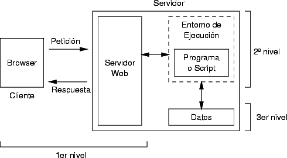

| Mainframe |
Los mainframes son computadoras grandes y potentes que se introdujeron en las décadas
de 1950 y 1960. Eran las principales máquinas en los centros
de datos, utilizadas por grandes organizaciones para procesar grandes cantidades de datos.
Los mainframes evolucionaron desde sistemas que ocupaban habitaciones enteras y requerían equipos
especializados para su operación, hasta sistemas más
compactos y eficientes, pero aún potentes.
|
|
| NFS |
Network File System NFS es un protocolo desarrollado por Sun Microsystems en 1984 que
permite a una computadora cliente acceder a archivos en un servidor a través de una red,
como si fueran locales. Esto es fundamental en entornos cliente/servidor para compartir archivos
entre diferentes sistemas.
Evolución:
NFS ha pasado por varias versiones que mejoran la seguridad, el rendimiento y la interoperabilidad
con otros sistemas. Se utiliza ampliamente en entornos Unix
y Linux, aunque también se ha adaptado para funcionar en otros sistemas operativos. |
 |
| C/S |
La arquitectura cliente/servidor surgió en los años 1980 y 1990 como un modelo
distribuido donde el cliente (generalmente una PC o terminal) solicita recursos
o servicios al servidor, que los proporciona. Este modelo se diferencia del mainframe porque el
procesamiento se distribuye entre múltiples máquinas.
Evolución:
Inicialmente, los sistemas cliente/servidor se utilizaban en redes locales (LAN) con aplicaciones de
bases de datos y servicios de archivos.
Con la expansión de Internet, el modelo cliente/servidor evolucionó para soportar aplicaciones web y
servicios en la nube, con servidores ubicados en centros de datos remotos.
|  |
| Multinivel |
La arquitectura multinivel o multicapa es una evolución del modelo cliente/servidor que divide las
aplicaciones en múltiples capas o niveles. Estos pueden incluir:
Capa de presentación: Interfaz de usuario.
Capa lógica o de negocio: Procesamiento de la lógica de negocio.
Capa de datos: Gestión y almacenamiento de datos.
Esta arquitectura permite una mayor modularidad, escalabilidad y flexibilidad en el desarrollo y
mantenimiento de aplicaciones.
Evolución:
Con la aparición de Internet, la arquitectura multinivel se ha vuelto estándar en el desarrollo de
aplicaciones web, donde la lógica de negocio puede estar en un servidor,
la base de datos en otro, y la interfaz de usuario en el navegador del cliente. |
 |
| Nube |
La nube es un modelo de entrega de servicios informáticos a través de Internet, que permite acceder
a recursos como servidores, almacenamiento y aplicaciones
sin necesidad de hardware local. Es escalable, flexible, reduce costos y ofrece acceso remoto. Los
servicios en la nube se pagan según el
uso y se dividen en tres categorías principales: Infraestructura como Servicio (IaaS), Plataforma
como Servicio (PaaS) y Software como Servicio (SaaS). |
|
| Serverless, Edge Computing, IA, Computación Cuántica |
Estas son las próximas etapas en la evolución, enfocadas en mejorar la eficiencia, velocidad, y
capacidad de procesamiento, y están más relacionadas con la
evolución de la tecnología informática en general que con la evolución física de los
computadores. |
|